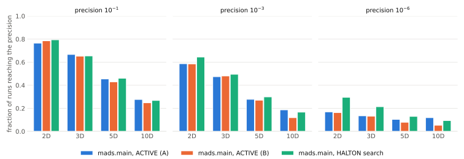
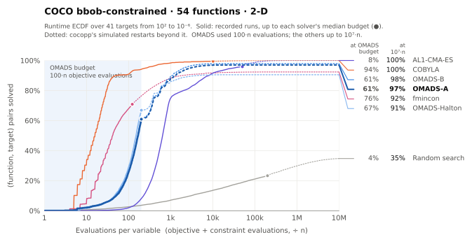
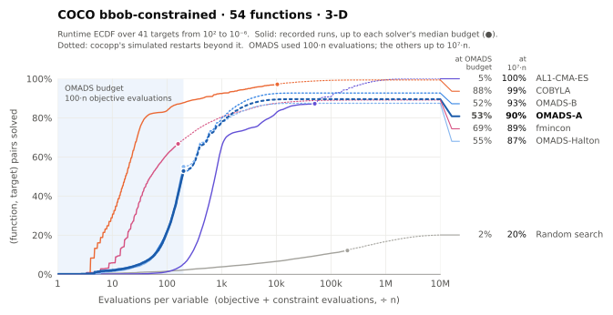
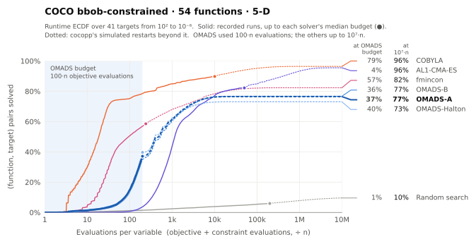
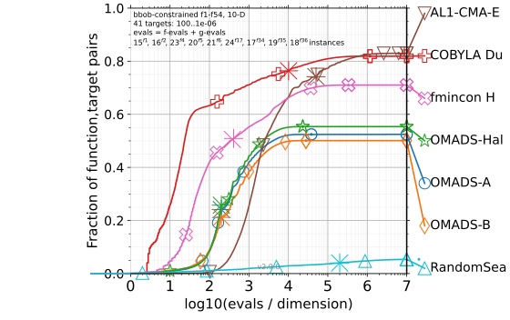

Benchmarking#
This section describes how OMADS 2610 is benchmarked: the regression suite that runs on
every commit, and the COCO bbob-constrained runner for large studies.
Regression suite#
tests/test_OMADS_BASIC.py runs on Linux, Windows and macOS in continuous integration.
Every solver must reach a target value within a fixed budget. For the 10D and 20D
Rosenbrock problems, the target is the median over three seeds (single-seed results
swing too much with the random direction stream).
Problem |
\(n\) |
Budget |
Solver: target |
|---|---|---|---|
Rosenbrock, \(x^0 = (-2.5, \dots)\) |
2 |
3500 |
mads ≤ 0.005, poll ≤ 0.008, search ≤ 0.07 |
Thin constrained band (2 PB constraints) |
2 |
2000 |
mads ≤ 0.0989 |
Rosenbrock (ORTHO N+1) |
10 |
4000 / 3000 |
mads ≤ 9.7, poll ≤ 8, search ≤ 7.3 |
Rosenbrock (ORTHO N+1) |
20 |
5000 |
mads ≤ 20.5, poll ≤ 20, search ≤ 24.3 |
Geometric programming (6 PB constraints) |
10 |
10000 |
poll ≤ 25.5 (median) |
Sellar, IDF formulation (GMESH) |
4 |
150 |
runs to completion |
The 2D Rosenbrock test also runs every solver in parallel mode (np = 4) and checks the
same targets.
Run the suite locally with:
$ pip install -e ".[test]"
$ pytest tests -v
COCO bbob-constrained#
benchmarks/coco/run_mads_bbob_constrained.py runs mads.main on the 54 functions of the
COCO bbob-constrained suite [Hansen et al., 2021]. Each COCO problem
\(x \mapsto f(x)\) with constraints \(g(x) \le 0\) becomes a callable blackbox
returning [f, g], and every constraint uses the progressive barrier. A run stops as soon
as COCO’s final target is hit, and unsolved instances are restarted (new start point and
seed) until budget_multiplier × dimension evaluations are used.
The runner’s defaults are the configuration published below (--preset A): the
ACTIVE sampling search with \(n_s = \min\{(n+1)(n+2)/2,\ 2n\}\), the ORTHO_N+1
poll and opportunistic evaluation, on dimensions 2, 3, 5 and 10, instances 1 to 15, with a
budget of \(100\,n\). The other published configurations are available as presets, and
any option overrides its preset value.
$ pip install -r benchmarks/coco/requirements.txt
$ python benchmarks/coco/run_mads_bbob_constrained.py # preset A
$ python benchmarks/coco/run_mads_bbob_constrained.py --preset halton
$ python benchmarks/coco/run_mads_bbob_constrained.py -d 2,3,5 -f 1-12 -i 1-3 \
--budget-multiplier 50
Results go to exdata/<output-folder> and are post-processed with cocopp into an
HTML report under ppdata/. Large runs can be split over several processes with
--batches N --batch k; post-process all the batch folders together with
python -m cocopp exdata/....
Preset |
COCO name |
Configuration |
|---|---|---|
|
|
|
|
|
|
|
|
|
|
|
|
Option |
Default |
Meaning |
|---|---|---|
|
|
Published configuration (see the table above). |
|
|
Evaluations per instance, times the dimension. |
|
|
Dimensions to run (the suite has 2, 3, 5, 10, 20, 40). |
|
all |
Function indices, e.g. |
|
|
Instance indices. |
|
preset |
Sampling method of the search step ( |
|
preset |
Samples per search step on f1 to f42 and on the multimodal Rastrigin functions
f43 to f54: an integer, |
|
preset |
Run the sampling search after every k-th consecutive failed poll only. |
|
preset |
Poll directions: |
|
preset |
Stop evaluating a poll or search set at its first improvement. |
|
|
|
|
|
GMESH anisotropy factor. |
|
|
GMESH minimum mesh size. |
|
|
Base seed, offset at each restart. |
|
|
Split the suite and pick the batch run by this process. |
Results on bbob-constrained#
Experimental setup#
OMADS 2610 was run on the 54 functions of bbob-constrained in dimensions 2, 3, 5 and 10,
on instances 1 to 15, with a budget of \(100\,n\) function evaluations per instance
(810 runs per dimension). All runs use mads.main with the settings of the COCO runner
(granular mesh, progressive barrier on every constraint). The quadratic model search runs
first at every iteration in all configurations; they differ in the sampling search and the
poll.
Label |
Configuration |
|---|---|
|
|
|
|
|
|
|
|
With the ACTIVE search, each model-based search step evaluates up to \(n_s\) BiTPE
proposals plus three line probes; with "opportunistic": True the evaluation of a poll or
search set stops at its first improvement.
The reference algorithms are the 2022 entries of the COCO data archive: COBYLA and AL1-CMA-ES (Dufossé), fmincon (Hellwig) and random search. These were run with much larger budgets, up to \(10^{7}\,n\) evaluations. Note that COCO counts every constraint evaluation in addition to the objective evaluation (“evals = f-evals + g-evals”), which is why the OMADS curves extend beyond \(\log_{10}(100) = 2\) on the horizontal axis.
Fraction of solved runs#
Figure 4 and Table 3 report, for each configuration and dimension, the fraction of the 810 runs whose final precision \(f - f_{\text{opt}}\) reached \(10^{-1}\), \(10^{-3}\) and \(10^{-6}\) within the budget.


Figure 4 Fraction of bbob-constrained runs (54 functions × 15 instances) reaching a given
precision within \(100\,n\) evaluations, for three configurations of mads.main.#
algorithm |
dimension |
runs |
reached 0.1 |
reached 0.001 |
reached 1e-06 |
|---|---|---|---|---|---|
mads.main, ACTIVE (A) |
2 |
810 |
0.753 |
0.554 |
0.164 |
mads.main, ACTIVE (A) |
3 |
810 |
0.636 |
0.456 |
0.136 |
mads.main, ACTIVE (A) |
5 |
810 |
0.421 |
0.260 |
0.096 |
mads.main, ACTIVE (A) |
10 |
810 |
0.272 |
0.160 |
0.101 |
mads.main, ACTIVE (B) |
2 |
810 |
0.781 |
0.572 |
0.158 |
mads.main, ACTIVE (B) |
3 |
810 |
0.621 |
0.435 |
0.122 |
mads.main, ACTIVE (B) |
5 |
810 |
0.419 |
0.249 |
0.073 |
mads.main, ACTIVE (B) |
10 |
810 |
0.233 |
0.104 |
0.028 |
mads.main, HALTON search |
2 |
810 |
0.785 |
0.637 |
0.300 |
mads.main, HALTON search |
3 |
810 |
0.651 |
0.496 |
0.216 |
mads.main, HALTON search |
5 |
810 |
0.449 |
0.288 |
0.115 |
mads.main, HALTON search |
10 |
810 |
0.256 |
0.153 |
0.084 |
mads.main, ACTIVE, ns = (n+1)(n+2)/2 + 10 |
2 |
810 |
0.093 |
0.005 |
0.000 |
mads.main, ACTIVE, ns = (n+1)(n+2)/2 + 10 |
3 |
810 |
0.088 |
0.010 |
0.000 |
mads.main, ACTIVE, ns = (n+1)(n+2)/2 + 10 |
5 |
810 |
0.025 |
0.001 |
0.000 |
mads.main, ACTIVE, ns = (n+1)(n+2)/2 + 10 |
10 |
810 |
0.015 |
0.002 |
0.000 |
Runtime distributions#
The grid in Table 4 shows the empirical cumulative distribution functions
(ECDFs) of the runtime, aggregated over all 54 functions, as produced by cocopp. Each curve
gives the fraction of (function, target) pairs, for 41 targets between \(10^{2}\) and
\(10^{-6}\), solved after a given number of evaluations divided by the dimension. In the
legends, OMADS-A, OMADS-B and OMADS-Hal stand for ACTIVE (A),
ACTIVE (B) and HALTON (cocopp truncates the labels).
 |
 |
 |
 |
Discussion#
The cost of the
ACTIVEsearch decides its usefulness at this budget. With \(n_s = (n+1)(n+2)/2 + 10\) after every unsuccessful poll, a search step costs up to \(79\) of the \(1000\) evaluations available in dimension 10, and fewer than 10% of the runs reach \(10^{-1}\) in any dimension. Capping the batch at \(2n\) (ACTIVE (A)), or running the search after every third failed poll only (ACTIVE (B)), together with the cheaperORTHO_N+1poll and opportunistic evaluation, brings theACTIVEsearch level with theHALTONconfiguration.In dimension 10,
ACTIVE (A)is the best configuration at every precision: 27.2% of the runs reach \(10^{-1}\) (25.6% forHALTON), 16.0% reach \(10^{-3}\) (15.3%) and 10.1% reach \(10^{-6}\) (8.4%). In dimension 5 the twoACTIVEconfigurations are within three points ofHALTON.In dimensions 2 and 3,
HALTONremains ahead, mostly at tight precisions; there the one-point sampling search leaves almost the whole budget to the model search and the poll.The runtime distributions (Table 4) give a complementary view, over 41 targets instead of three precisions. In dimension 2, both
ACTIVEconfigurations solve about 98% of the (function, target) pairs within their budget, more thanHALTON(91%) and fmincon (92%), and close to COBYLA and AL1-CMA-ES, which use up to \(10^{7}\,n\) evaluations. In dimension 10,HALTONsolves slightly more pairs (55%) thanACTIVE (A)(52%) andACTIVE (B)(50%): it reaches more of the easy targets, whileACTIVE (A)reaches more of the tight ones.Smaller batches generalize better than a less frequent search:
ACTIVE (B), which keeps the large batches, is close toACTIVE (A)in dimensions 2 to 5 but falls behind in dimension 10.COBYLA and fmincon, two model-based local solvers, are faster on these constrained, mostly smooth functions; they also reach more targets because they were run with budgets several orders of magnitude larger.
Results reproducibility#
The results above are reproduced, from the benchmark runs to the figures and the table of this page, by a single script.
Requirements. Python 3.10 or newer and an internet connection (cocopp downloads the reference algorithms from the COCO data
archive on first use). From the root of the OMADS repository, install OMADS and the
benchmarking packages (coco-experiment, cocopp and matplotlib):
$ python -m pip install -e .
$ python -m pip install -r benchmarks/coco/requirements.txt
Run.
$ python benchmarks/coco/reproduce_results.py
The script
runs the four presets
A,B,haltonandinitialofrun_mads_bbob_constrained.pyon dimensions 2, 3, 5 and 10, instances 1 to 15, with a budget of \(100\,n\), each split into 12 batches executed in parallel (a batch that fails is run again once);gathers the batches of each preset into
exdata/OMADS-A,exdata/OMADS-B,exdata/OMADS-Haltonandexdata/OMADS-ACTIVE;post-processes
OMADS-A,OMADS-BandOMADS-Haltonwithcocoppagainst COBYLA, AL1-CMA-ES, fmincon and random search (full HTML report inppdata/repro);writes the runtime ECDFs (Table 4) and, from all four presets, the summary chart and table (Figure 4 and Table 3) to
docs_src/media/figures/coco. Rebuild the documentation withsphinx-build -b html docs_src docsto update this page.
On a 24-core workstation with 12 parallel processes, the runs take about 8 to 10 hours, most
of it for presets A and B in dimension 10, and cocopp about half an hour more.
Option |
Default |
Meaning |
|---|---|---|
|
|
Presets to run. |
|
half the CPU cores, at most 12 |
Parallel processes. On a 64 GB machine, 12 processes run without problems while 24 run out of memory; lower it if batches fail with memory errors. |
|
|
Batches per preset. |
|
runner defaults |
Dimensions, functions and instances, for a reduced reproduction. |
|
repository root |
Folder that receives |
|
|
Where the figures and table are written. |
|
off |
Reuse existing |
A single configuration can also be run on its own, for example
python benchmarks/coco/run_mads_bbob_constrained.py --preset B, and post-processed with
benchmarks/coco/postprocess_bbob_constrained.py and
benchmarks/coco/summarize_bbob_constrained.py.
Note
The sampling search draws random numbers that are not all controlled by the run seed, so repeated campaigns give slightly different individual runs. The aggregated fractions and runtime distributions agree to within about one percentage point.
Toy problems#
Results on the 2D toy functions, from the Toy problems, with
mads.main, seed 0 and a 1000-evaluation budget (2000 for Eggholder):
Function |
Global minimum |
OMADS |
Evaluations |
Search |
|---|---|---|---|---|
Rosenbrock |
0 |
0.0 |
223 |
ACTIVE |
Alpine |
0 |
4.5e-06 |
270 |
ACTIVE |
Ackley 3 |
−186.4112 |
−186.4112 |
253 |
ACTIVE |
Eggholder |
−959.6407 |
−959.6407 |
871 |
LH, |